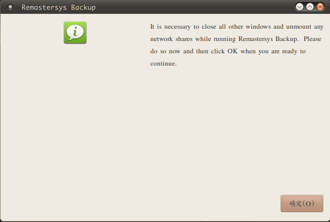

publish blog with github+markdown+pelican
简单的介绍下这三个"工具"
github page
简单来说github page就是github的一个附件功能，用来搭建个人博客的功能。
无限流量，免租服务器，还很geek！！
github page官网
github
what is pelican
pelican 类似jekyll，但是基于python的博客系统，用来搭建github page。
由于我用的Ubuntu10.04，安装jekyll的话ruby版本是个问题，要重新编译。
作为一个pythoner，果断投入pelican的怀抱
安装pelican
由于国内GFW原因，还是下源码自己编译吧
下载地址
pelican官方教程
markdown
markdown 这个就不解释了，自己看教程吧
markdown 语法
图灵社区markdown教程
最后附上详细教程一篇
more ...定制个人linux
不知道你有没有这样的苦恼，每次重装linux系统的时候，又要把以前的
软件重装一遍。又是换源，又是更新。各种蛋疼。说到这里，你大概猜到这篇
博客专门用来治疗这种蛋疼到。好了,不说废话了，直接看下面方法。
安装Remastersys(以Ubuntu为例)
sudo echo "deb http://www.geekconnection.org/remastersys/repository karmic/" >> /etc/apt/sources.list sudo apt-get update && sudo apt-get upgrade
定制ISO
定制前最好把系统多余到软件包什么的都删了，需要到软件保留。
直接看截图吧：



最后生成到iso文件在/home/remastersys/remastersys 里面
拷贝出来后，可清理。

xubuntu12.04 折腾记
折腾来由
本人持有y450，俗称小y。y恰好是姓氏到第一个字母。当然，这跟我当初为什么买小y没有一毛钱到关系。
电脑上一直装到ubuntu10.04，暑假回家到时候，心血来潮地折腾了下xfce4，其简单性，轻量性是我放弃gnome2催化剂。一不做，二不休，这次直接换装xubuntu了。选择了最新的12.04版本，不要误会，本人完全没有最新情结。
安装
硬盘安装比较麻烦，手头又没有光盘，借了个U盘，挂载了xubuntu。usb启动，安装........
由于以前，我把home目录单独挂载了一个分区，因此此次重装系统，不会影响到我到主目录，连备份都省了
开始折腾
安装好了后，界面很清新，有一些细节需要自己动手配置下
桌面图标字体背景不透明
在主目录下新建.gtk-2.0.rc文件
vim ~/.gtk-2.0.rc
写入一下内容
style "xfdesktop-icon-view" { font_name ...